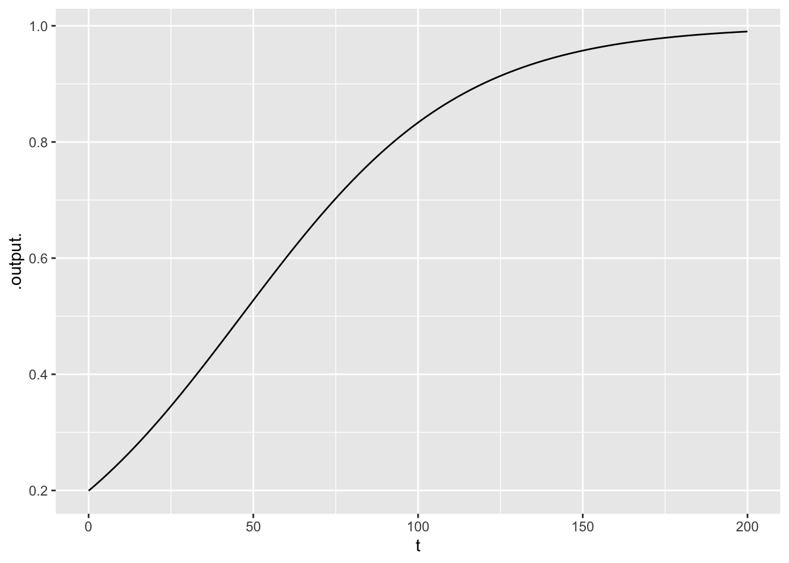

slice_plot(exp(-1.39+0.03*t)/ (1+exp(-1.39+0.03*t)) ~ t, bounds(t=0:200))
Measuring and accumulating risk
Prof. Danny Kaplan
October 14, 2022
Distinguish between absolute and relative risk and identify when a change in risk is being presented as absolute or relative.
Calculate and correctly interpret other presentations of differences in risk: population attributable fraction, NTT, odds ratio.
Interpret effect size as stated in log odds.
TBD
Introduce words related to “risk” and try to convert them into seeing a continuum of “risk” to “opportunity,” that is, uncertain outcomes that could be positive or negative. (“Risk reduction,” “volatility,” “gain,” “gambling”).
Each risky outcome is quantified by two numbers: a probability, and a value. It’s easiest to talk about the value measured in dollars, but there of course other scales: “lives (lost or saved),” “years of life,” “happiness,” “satisfaction,” etc. Unfortunately, we don’t have standard numerical scales for these.
(Epidemiologists have a scale for quantifying health outcome: Quality adjusted life years (QALYs) which would take a class session on its own to explain, but which is highly instructive.)
A “loss function” takes as input a possible outcome of an uncertain event and produces as output a value, which we might measure in dollars or QALYs or lives, etc. For the sake of definiteness, denote a loss function as \(L(\cal O)\), where \(\cal O\) is an outcome of the uncertain event. In quantifying loss, each possible outcome \(\cal O\) is associated with a probability. Let’s call this \(p(\cal O)\). Mathematical philosophers have been arguing since the mid 1600s about what exactly is meant by probability. Don’t expect a resolution to this quandry. For our purposes, it suffices to think about a probability of an outcome in the context of a prediction model, using the tools from Lesson 26.
To illustrate, imagine the situation of an ice-cream pushcart vendor. If it is cold or rainy, sales will be slight. If it’s beautiful and hot, sales will be high. Help the students construct a plausible “loss” function: sales versus temperature.1 Then generalize that into a function with two inputs, say, raininess and temperature. Or even three inputs: day of the week/holiday, raininess and temperature. Whatever the inputs, the output is sales of ice cream.
We have two functions that, together, quantify risk. A loss function \(L(\cal O\) and a probability function \(p(\cal O)\) where \(\cal O\) is the uncertain outcome of the event. It’s very common to compose these two functions into a single function: \(p(L(\cal O))\). Imagine \(L(\cal O)\) has an output denominated in, say, dollars. The composed function then looks like \(p(\$)\). There may be many different outcomes that lead to the same $ loss, but lumping them together as a single $ outcome gives a function \(p(\$)\). Presented this way, risk measurement is reduced to a single function with a single input, $, and an output in the form of a probability.
The scale generally used for uncertainty is “probability,” a number between 0 and 1. But there are other scales in use and sometimes these have advantages for doing calculations. The two most important are:
Any probability can be converted to an odds and vice versa. Similarly, log odds can be converted into odds by using exponentiation (or vice versa, by using the logarithm function).
The bookie arranges things so that the money staked by the gamblers is simply redistributed. The winners get back their stake plus the money staked by the losers. The odds given reflect the balance between the winners’ stakes and the losers’ stakes. If $50 is bet on A and $25 on B, then the odds on A will be 1:2. That is, the winners, if A is the outcome, will get $25 plus their stake back. Since their stake was $50, the odds will be 1:2. On the other hand, if B is the outcome, the winners will get $50 plus their stake. This corresponds to odds of 2:1.
Provide a situation where there are many “risk factors” for an outcome. Suppose the outcome is disease D and there are risk factors \(R_1\), \(R_2\), \(R_3\), …, say “smoking,” “drinking,” “sun exposure,” “speeding,” and so on. With disease, age is almost always a factor.
Imagine that the risk of D in the next 10 years is p_0 = 20% for a 20-year old who doesn’t smoke, drink, sunbathe, or drive too fast. For the sake of illustration, let’s imagine that smoking triples the risk, drinking doubles it, sunbathing increases it by 50%, speeding doubles it, and each year of age increases it by 2%. The 50-year old who has all the risk factors therefore faces a risk of D of
$ = 6.52 $
This is ridiculous: you can’t have a probability of 6.52. In general, it doesn’t work to multiply the effects of risk factors.
Instead, the standard statistical/mathematical approach is to represent risk using log odds.
Base risk: 20% which corresponds to odds of 2/8 or log odds of -1.39.
Smoking: Triples the risk to 60%, that is odds of 6/4 or log odds of 0.405. This is an increase of \((0.405 - -1.39) = 1.75\) above the base risk.
Drinking: Doubles the risk to 40%, that is odds of 4/6 or log odds of -0.405, an increase above the base rate of \(-0.405 - -1.39 = 0.985\).
To accumulate risk, rather than multiplying, we add in the log-odds increment due to each risk factor.
If multiplying, smoking and drinking for a 20-year old would produce a risk of \(0.2 \times 3 \times 2 = 1.2\), which cannot be a probability.
Adding the log-odds increments gives the log-odds for a 20-year smoker/drinker as \(-1.39 + 1.75 + 0.985 = 1.345\). The odds for this person are therefore \(e^{1.345} = 3.83\). Converting odds back to probability gives \(\frac{3.83}{1+3.83} = 79\%\).
Show the risk as a function of age in the multiplying style: \(0.2 \times 1.02^t\).
Now show risk as a function of age in log odds format. Base is \(-1.39\). One year’s increment gives \(0.2 \times 1.02 = 0.204\) which converts to \(\ln(\frac{.204/.796}) = -1.36\), an increment of 0.03 in log-odds units.
In this format, risk as a function of age will be \(-1.39 + 0.03t\), where \(t\) is the number of years past age 20. We can convert this to a probability as a function of age:
\(p(t) = \frac{\exp(-1.39 + 0.03t)}{1 + \exp(-1.39 + 0.03t)}\). To emphasize the pattern, let’s follow the person’s risk over the next 200 years (even though nobody lives to age 220).
People tend to perceive risk in a way that doesn’t correspond to a probability or a value scale (such as ice-cream sales). First, outcomes with a high probability are seen as certain. Outcomes with a very low probability are either seen as impossible or rounded up. So the perception of a one-in-a-million risk is seen as a risk on the order of 1% or 10%.
Second, there are “dread factors” that can dramatically increase the perceived risk. Examples are: “out of my control,” “impact on the unborn,” “hidden impact.” The dread-factor theory provides an explanation for why many people see commercial aviation as riskier than driving, or the huge aversion to low levels of radiation exposure.
Needless to say, a vendor doesn’t see sales as a “loss.” But “loss function” is a convenient term for the function relating value to ↩︎